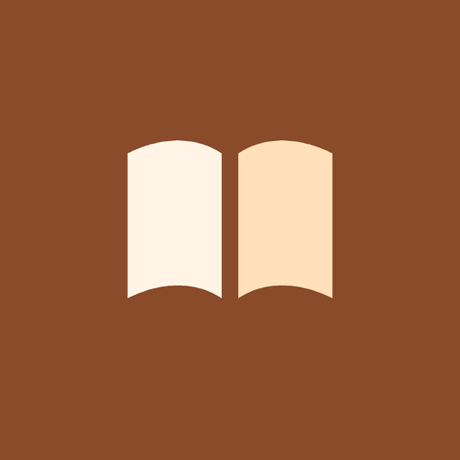

CostHand Privacy Policy
Last updated: 2026-11-20
This is the privacy policy of the CostHand app (package app.costhand) for Android, a cost and order book for people who make and sell products from home. Developer: Ahmed Fares. Contact for privacy questions: remotysupport@gmail.com.
What data the app uses
CostHand has no account, no server, no ads, no analytics and no tracking. The developer does not collect, receive, sell or share any of your data.
Everything you enter is stored only on your device, in the app's private storage: your business name, ingredients and prices, recipes and products, customers (name, phone number, notes, occasions), orders, payments, expenses, product photos, and the address or permit number you type for a product label.
- Contacts. When you tap "Pick from contacts", Android's own contact picker opens. The app receives only the one contact you choose (name and phone number) and saves it on your device. The app has no permission to read your contacts.
- Photos and camera. A product photo or logo you take or pick is copied into the app's storage on your device. The app has no permission to read your gallery.
- App lock. If you turn on the lock, your phone checks your fingerprint, face or PIN. The app never sees them.
- Notifications. Reminders are scheduled on your device.
When data leaves your device
Only when you send it yourself:
- Backup. A backup is a file that you create and send where you choose (for example Google Drive or a chat with yourself). The developer never sees it.
- Messages and sharing. When you tap WhatsApp or Share, the app opens the app you chose with the text, PDF or image. Nothing is sent until you send it there, and that app's own privacy policy applies.
- Android device backup. If backup is turned on in your phone's settings, Android may save the app's data to your own Google account under Google's terms. The developer has no access to it.
Purchases
The CostHand Pro subscription is sold by Google Play. Google handles the payment under its own privacy policy; the developer does not see your card or payment details. The app only asks Google Play whether your subscription is active.
Security
Your data stays in the app's private storage, which other apps cannot read. You can add the app lock in Settings. A backup file is not encrypted, so keep it somewhere only you can reach.
Keeping and deleting your data
Your data stays on your device until you delete it. You can delete single records in the app. To delete everything, uninstall the app or clear its storage in your phone's settings. Because the developer holds none of your data, there is nothing for the developer to delete.
Children
CostHand is a business tool for adults and is not directed at children.
Changes
If this policy changes, the new version is published at this address with a new date.
سياسة الخصوصية لتطبيق CostHand
آخر تحديث: 2026-11-20
هذه سياسة الخصوصية لتطبيق CostHand (الحزمة app.costhand) على أندرويد، وهو دفتر التكلفة والطلبات لكل من يصنع ويبيع من البيت. المطوّر: Ahmed Fares. للتواصل بخصوص الخصوصية: remotysupport@gmail.com.
البيانات التي يستخدمها التطبيق
لا يوجد في CostHand حساب ولا سيرفر ولا إعلانات ولا تحليلات ولا تتبّع. المطوّر لا يجمع أي بيانات ولا يستلمها ولا يبيعها ولا يشاركها.
كل ما يُدخَل يُحفظ على الجهاز فقط، في مساحة التطبيق الخاصة: اسم النشاط، المكونات والأسعار، الوصفات والمنتجات، العملاء (الاسم ورقم الهاتف والملاحظات والمناسبات)، الطلبات، المدفوعات، المصاريف، صور المنتجات، والعنوان أو رقم التصريح المكتوب لملصق المنتج.
- جهات الاتصال. عند الضغط على "اختيار من جهات الاتصال" يفتح منتقي جهات الاتصال الخاص بأندرويد. التطبيق يستلم فقط جهة الاتصال المختارة (الاسم ورقم الهاتف) ويحفظها على الجهاز. التطبيق لا يملك إذن قراءة جهات الاتصال.
- الصور والكاميرا. صورة المنتج أو الشعار الملتقطة أو المختارة تُنسخ إلى مساحة التطبيق على الجهاز. التطبيق لا يملك إذن قراءة معرض الصور.
- قفل التطبيق. عند تفعيل القفل، الجوال نفسه يتحقق من البصمة أو الوجه أو الرمز. التطبيق لا يراها أبدًا.
- الإشعارات. التذكيرات تُجدوَل على الجهاز.
متى تخرج البيانات من الجهاز
فقط عند إرسالها من صاحب الجهاز:
- النسخة الاحتياطية. ملف يُنشأ من التطبيق ويُرسَل إلى المكان المختار (مثل Google Drive أو محادثة شخصية). المطوّر لا يراه أبدًا.
- الرسائل والمشاركة. عند الضغط على واتساب أو مشاركة، يفتح التطبيق المختار ومعه النص أو ملف PDF أو الصورة. لا يُرسَل شيء إلا بعد الإرسال من هناك، وتنطبق سياسة خصوصية ذلك التطبيق.
- نسخ أندرويد الاحتياطي. إذا كان النسخ الاحتياطي مفعّلًا في إعدادات الجوال، قد يحفظ أندرويد بيانات التطبيق في حساب Google الخاص بصاحب الجهاز وفق شروط Google. المطوّر لا يستطيع الوصول إليها.
المشتريات
اشتراك CostHand Pro يُباع عبر Google Play. Google تتولى الدفع وفق سياسة الخصوصية الخاصة بها، والمطوّر لا يرى بيانات البطاقة أو الدفع. التطبيق يسأل Google Play فقط عمّا إذا كان الاشتراك فعّالًا.
الأمان
البيانات تبقى في مساحة التطبيق الخاصة التي لا تستطيع التطبيقات الأخرى قراءتها. يمكن إضافة قفل التطبيق من الإعدادات. ملف النسخة الاحتياطية غير مشفّر، فيُفضَّل حفظه في مكان خاص.
الاحتفاظ بالبيانات وحذفها
البيانات تبقى على الجهاز إلى أن تُحذف. يمكن حذف أي سجل من داخل التطبيق. لحذف كل شيء: إزالة التطبيق أو مسح بياناته من إعدادات الجوال. ولأن المطوّر لا يحتفظ بأي بيانات، لا يوجد لديه ما يحذفه.
الأطفال
CostHand أداة عمل للبالغين وغير موجّه للأطفال.
التغييرات
إذا تغيّرت هذه السياسة، تُنشر النسخة الجديدة على هذا العنوان بتاريخ جديد.